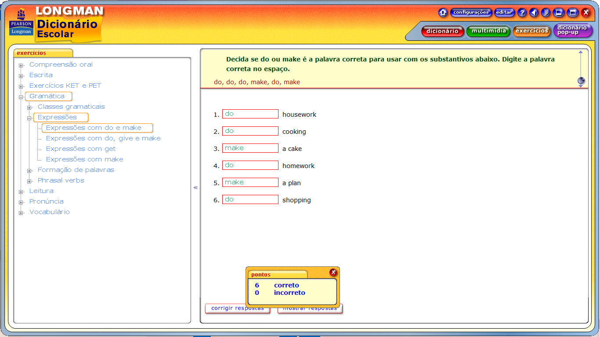

Expressões com do e make

do housework = fazer tarefas domésticas
do cooking = cozinhar
make a cake = faça um bolo
do homework = fazer lição de casa
make a plan = faça um plano
do shopping = fazer compras
do housework = fazer tarefas domésticas
do cooking = cozinhar
make a cake = faça um bolo
do homework = fazer lição de casa
make a plan = faça um plano
do shopping = fazer compras
Hello. Is that the Doctor's surgery? Yes? I'd like to make an appointment, please = Olá. Essa é a cirurgia do médico? Sim? Gostaria de marcar uma consulta, por favor
He's missed all the trains. Can anybody give him a lift home ? = Ele perdeu todos os trens. Alguém pode lhe dar uma carona para casa ?
His boss gave him permission to take a day off work to visit his sick mother. = Seu chefe lhe deu permissão para tirar um dia de folga do trabalho para visitar sua mãe doente.
When she crashed into that tree, she did some real damage to her car. = Quando ela bateu naquela árvore, ela causou alguns danos reais ao carro.
I don't have enough information for my essay - I need to do some research = Não tenho informações suficientes para minha redação - preciso fazer alguma pesquisa
She was really sorry that they were always arguing. She decided to make an effort to improve the relationship. = Ela realmente lamentava que eles estivessem sempre discutindo. Ela decidiu fazer um esforço para melhorar o relacionamento.
If you don't behave well during the year, you won't get anything for Christmas = Se você não se comportar bem durante o ano, não ganhará nada no Natal
I'm sorry. I can't come out tonight. I have get my homework by tomorrow = Desculpe. Não posso sair hoje à noite. Tenho que entregar meu dever de casa amanhã.
He wasn't very happy at all. In fact, he got angry when he saw what had happened = Ele não ficou nada feliz. Na verdade, ele ficou bravo quando viu o que tinha acontecido
You'll never be able to lift that on your own. You should get someone to help you = Você nunca conseguirá levantar isso sozinho. Você deveria ter alguém para ajudá-lo
What time do you think you'll get home tonight, I need to know what time to get started on the dinner = Que horas você acha que chegará em casa hoje à noite, Preciso saber que horas começar a preparar o jantar
If you go outside in winter without a sweater, you'll get cold = Se você sair no inverno sem um suéter, você vai ficar com frio
I mustn't forget her telephone number. I'll make a note of it. = Não devo esquecer o número de telefone dela. Vou anotar
I've got a terrible headache. I'll make an appointment with the doctor = Estou com uma dor de cabeça terrível. Vou marcar uma consulta com o médico.
I've been working on this essay all day but I haven't written anything. I've made no progress at all. = Estou trabalhando neste ensaio o dia todo, mas não escrevi nada. Não fiz nenhum progresso.
He's been thinking about buying the flat all day. He needs to make a decision, or they'll sell it to someone else = Ele está pensando em comprar o apartamento o dia todo. Ele precisa tomar uma decisão, ou eles vão vender para outra pessoa
Ben and Joe were making too much noise and couldn't hear me = Ben e Joe estavam fazendo muito barulho e não conseguiam me ouvir.
We lost because we made a lot of mistakes = Perdemos porque cometemos muitos erros